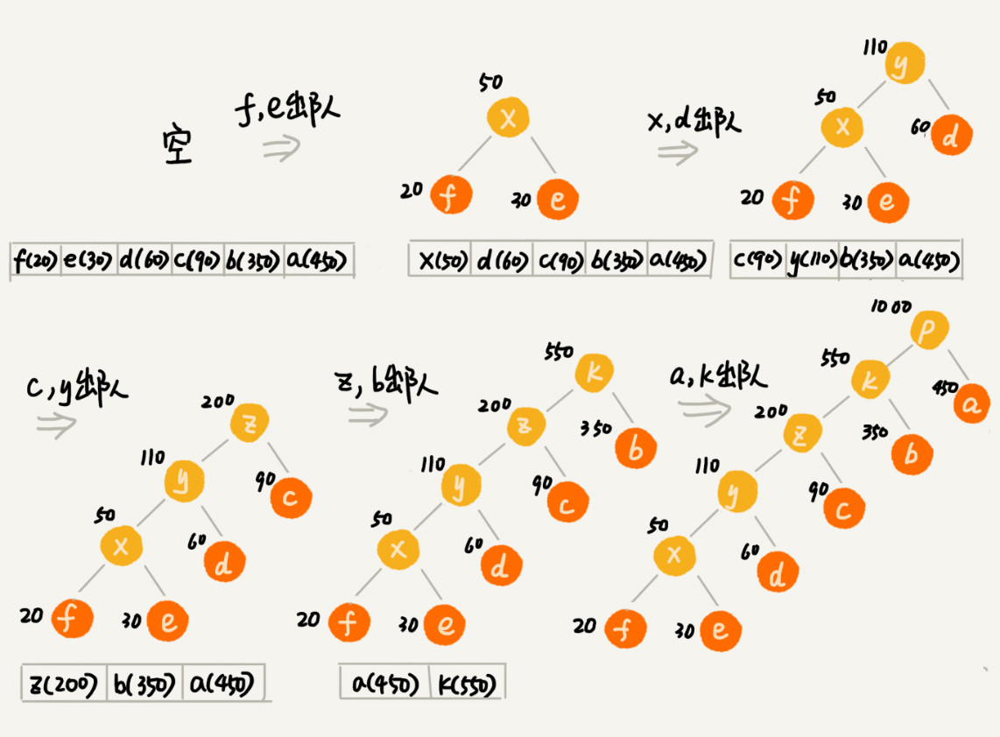

<!DOCTYPE HTML>
<html lang="" >
    <head>
        <meta charset="UTF-8">
        <meta content="text/html; charset=utf-8" http-equiv="Content-Type">
        <title>37 | 贪心算法：如何用贪心算法实现Huffman压缩编码？ · GitBook</title>
        <meta http-equiv="X-UA-Compatible" content="IE=edge" />
        <meta name="description" content="">
        <meta name="generator" content="GitBook 3.2.3">
        
        
        
    
    <link rel="stylesheet" href="../gitbook/style.css">

    
            
                
                <link rel="stylesheet" href="../gitbook/gitbook-plugin-highlight/website.css">
                
            
                
                <link rel="stylesheet" href="../gitbook/gitbook-plugin-search/search.css">
                
            
                
                <link rel="stylesheet" href="../gitbook/gitbook-plugin-fontsettings/website.css">
                
            
        

    

    
        
    
        
    
        
    
        
    
        
    
        
    

        
    
    
    <meta name="HandheldFriendly" content="true"/>
    <meta name="viewport" content="width=device-width, initial-scale=1, user-scalable=no">
    <meta name="apple-mobile-web-app-capable" content="yes">
    <meta name="apple-mobile-web-app-status-bar-style" content="black">
    <link rel="apple-touch-icon-precomposed" sizes="152x152" href="../gitbook/images/apple-touch-icon-precomposed-152.png">
    <link rel="shortcut icon" href="../gitbook/images/favicon.ico" type="image/x-icon">

    
    <link rel="next" href="38.html" />
    
    
    <link rel="prev" href="36.html" />
    

    </head>
    <body>
        
<div class="book">
    <div class="book-summary">
        
            
<div id="book-search-input" role="search">
    <input type="text" placeholder="Type to search" />
</div>

            
                <nav role="navigation">
                


<ul class="summary">
    
    

    

    
        
        
    
        <li class="chapter " data-level="1.1" data-path="../">
            
                <a href="../">
            
                    
                    介绍
            
                </a>
            

            
            <ul class="articles">
                
    
        <li class="chapter " data-level="1.1.1" data-path="00.html">
            
                <a href="00.html">
            
                    
                    开篇词 | 从今天起，跨过“数据结构与算法”这道坎
            
                </a>
            

            
        </li>
    
        <li class="chapter " data-level="1.1.2" data-path="01.html">
            
                <a href="01.html">
            
                    
                    01 | 为什么要学习数据结构和算法？
            
                </a>
            

            
        </li>
    
        <li class="chapter " data-level="1.1.3" data-path="02.html">
            
                <a href="02.html">
            
                    
                    02 | 如何抓住重点，系统高效地学习数据结构与算法？
            
                </a>
            

            
        </li>
    
        <li class="chapter " data-level="1.1.4" data-path="03.html">
            
                <a href="03.html">
            
                    
                    03 | 复杂度分析（上）：如何分析、统计算法的执行效率和资源消耗？
            
                </a>
            

            
        </li>
    
        <li class="chapter " data-level="1.1.5" data-path="04.html">
            
                <a href="04.html">
            
                    
                    04 | 复杂度分析（下）：浅析最好、最坏、平均、均摊时间复杂度
            
                </a>
            

            
        </li>
    
        <li class="chapter " data-level="1.1.6" data-path="04-1.html">
            
                <a href="04-1.html">
            
                    
                    不定期福利第一期 | 数据结构与算法学习书单
            
                </a>
            

            
        </li>
    
        <li class="chapter " data-level="1.1.7" data-path="05.html">
            
                <a href="05.html">
            
                    
                    05 | 数组：为什么很多编程语言中数组都从0开始编号？
            
                </a>
            

            
        </li>
    
        <li class="chapter " data-level="1.1.8" data-path="06.html">
            
                <a href="06.html">
            
                    
                    06 | 链表（上）：如何实现LRU缓存淘汰算法?
            
                </a>
            

            
        </li>
    
        <li class="chapter " data-level="1.1.9" data-path="07.html">
            
                <a href="07.html">
            
                    
                    07 | 链表（下）：如何轻松写出正确的链表代码？
            
                </a>
            

            
        </li>
    
        <li class="chapter " data-level="1.1.10" data-path="08.html">
            
                <a href="08.html">
            
                    
                    08 | 栈：如何实现浏览器的前进和后退功能？
            
                </a>
            

            
        </li>
    
        <li class="chapter " data-level="1.1.11" data-path="09.html">
            
                <a href="09.html">
            
                    
                    09 | 队列：队列在线程池等有限资源池中的应用
            
                </a>
            

            
        </li>
    
        <li class="chapter " data-level="1.1.12" data-path="10.html">
            
                <a href="10.html">
            
                    
                    10 | 递归：如何用三行代码找到“最终推荐人”？
            
                </a>
            

            
        </li>
    
        <li class="chapter " data-level="1.1.13" data-path="11.html">
            
                <a href="11.html">
            
                    
                    11 | 排序（上）：为什么插入排序比冒泡排序更受欢迎？
            
                </a>
            

            
        </li>
    
        <li class="chapter " data-level="1.1.14" data-path="12.html">
            
                <a href="12.html">
            
                    
                    12 | 排序（下）：如何用快排思想在O(n)内查找第K大元素？
            
                </a>
            

            
        </li>
    
        <li class="chapter " data-level="1.1.15" data-path="13.html">
            
                <a href="13.html">
            
                    
                    13 | 线性排序：如何根据年龄给100万用户数据排序？
            
                </a>
            

            
        </li>
    
        <li class="chapter " data-level="1.1.16" data-path="14.html">
            
                <a href="14.html">
            
                    
                    14 | 排序优化：如何实现一个通用的、高性能的排序函数？
            
                </a>
            

            
        </li>
    
        <li class="chapter " data-level="1.1.17" data-path="15.html">
            
                <a href="15.html">
            
                    
                    15 | 二分查找（上）：如何用最省内存的方式实现快速查找功能？
            
                </a>
            

            
        </li>
    
        <li class="chapter " data-level="1.1.18" data-path="16.html">
            
                <a href="16.html">
            
                    
                    16 | 二分查找（下）：如何快速定位IP对应的省份地址？
            
                </a>
            

            
        </li>
    
        <li class="chapter " data-level="1.1.19" data-path="17.html">
            
                <a href="17.html">
            
                    
                    17 | 跳表：为什么Redis一定要用跳表来实现有序集合？
            
                </a>
            

            
        </li>
    
        <li class="chapter " data-level="1.1.20" data-path="18.html">
            
                <a href="18.html">
            
                    
                    18 | 散列表（上）：Word文档中的单词拼写检查功能是如何实现的？
            
                </a>
            

            
        </li>
    
        <li class="chapter " data-level="1.1.21" data-path="19.html">
            
                <a href="19.html">
            
                    
                    19 | 散列表（中）：如何打造一个工业级水平的散列表？
            
                </a>
            

            
        </li>
    
        <li class="chapter " data-level="1.1.22" data-path="20.html">
            
                <a href="20.html">
            
                    
                    20 | 散列表（下）：为什么散列表和链表经常会一起使用？
            
                </a>
            

            
        </li>
    
        <li class="chapter " data-level="1.1.23" data-path="21.html">
            
                <a href="21.html">
            
                    
                    21 | 哈希算法（上）：如何防止数据库中的用户信息被脱库？
            
                </a>
            

            
        </li>
    
        <li class="chapter " data-level="1.1.24" data-path="22.html">
            
                <a href="22.html">
            
                    
                    22 | 哈希算法（下）：哈希算法在分布式系统中有哪些应用？
            
                </a>
            

            
        </li>
    
        <li class="chapter " data-level="1.1.25" data-path="23.html">
            
                <a href="23.html">
            
                    
                    23 | 二叉树基础（上）：什么样的二叉树适合用数组来存储？
            
                </a>
            

            
        </li>
    
        <li class="chapter " data-level="1.1.26" data-path="24.html">
            
                <a href="24.html">
            
                    
                    24 | 二叉树基础（下）：有了如此高效的散列表，为什么还需要二叉树？
            
                </a>
            

            
        </li>
    
        <li class="chapter " data-level="1.1.27" data-path="25.html">
            
                <a href="25.html">
            
                    
                    25 | 红黑树（上）：为什么工程中都用红黑树这种二叉树？
            
                </a>
            

            
        </li>
    
        <li class="chapter " data-level="1.1.28" data-path="26.html">
            
                <a href="26.html">
            
                    
                    26 | 红黑树（下）：掌握这些技巧，你也可以实现一个红黑树
            
                </a>
            

            
        </li>
    
        <li class="chapter " data-level="1.1.29" data-path="27.html">
            
                <a href="27.html">
            
                    
                    27 | 递归树：如何借助树来求解递归算法的时间复杂度？
            
                </a>
            

            
        </li>
    
        <li class="chapter " data-level="1.1.30" data-path="27-1.html">
            
                <a href="27-1.html">
            
                    
                    不定期福利第二期 | 王争：羁绊前行的，不是肆虐的狂风，而是内心的迷茫
            
                </a>
            

            
        </li>
    
        <li class="chapter " data-level="1.1.31" data-path="28.html">
            
                <a href="28.html">
            
                    
                    28 | 堆和堆排序：为什么说堆排序没有快速排序快？
            
                </a>
            

            
        </li>
    
        <li class="chapter " data-level="1.1.32" data-path="29.html">
            
                <a href="29.html">
            
                    
                    29 | 堆的应用：如何快速获取到Top 10最热门的搜索关键词？
            
                </a>
            

            
        </li>
    
        <li class="chapter " data-level="1.1.33" data-path="30.html">
            
                <a href="30.html">
            
                    
                    30 | 图的表示：如何存储微博、微信等社交网络中的好友关系？
            
                </a>
            

            
        </li>
    
        <li class="chapter " data-level="1.1.34" data-path="31.html">
            
                <a href="31.html">
            
                    
                    31 | 深度和广度优先搜索：如何找出社交网络中的三度好友关系？
            
                </a>
            

            
        </li>
    
        <li class="chapter " data-level="1.1.35" data-path="32.html">
            
                <a href="32.html">
            
                    
                    32 | 字符串匹配基础（上）：如何借助哈希算法实现高效字符串匹配？
            
                </a>
            

            
        </li>
    
        <li class="chapter " data-level="1.1.36" data-path="33.html">
            
                <a href="33.html">
            
                    
                    33 | 字符串匹配基础（中）：如何实现文本编辑器中的查找功能？
            
                </a>
            

            
        </li>
    
        <li class="chapter " data-level="1.1.37" data-path="34.html">
            
                <a href="34.html">
            
                    
                    34 | 字符串匹配基础（下）：如何借助BM算法轻松理解KMP算法？
            
                </a>
            

            
        </li>
    
        <li class="chapter " data-level="1.1.38" data-path="35.html">
            
                <a href="35.html">
            
                    
                    35 | Trie树：如何实现搜索引擎的搜索关键词提示功能？
            
                </a>
            

            
        </li>
    
        <li class="chapter " data-level="1.1.39" data-path="36.html">
            
                <a href="36.html">
            
                    
                    36 | AC自动机：如何用多模式串匹配实现敏感词过滤功能？
            
                </a>
            

            
        </li>
    
        <li class="chapter active" data-level="1.1.40" data-path="37.html">
            
                <a href="37.html">
            
                    
                    37 | 贪心算法：如何用贪心算法实现Huffman压缩编码？
            
                </a>
            

            
        </li>
    
        <li class="chapter " data-level="1.1.41" data-path="38.html">
            
                <a href="38.html">
            
                    
                    38 | 分治算法：谈一谈大规模计算框架MapReduce中的分治思想
            
                </a>
            

            
        </li>
    
        <li class="chapter " data-level="1.1.42" data-path="38-1.html">
            
                <a href="38-1.html">
            
                    
                    不定期福利第三期 | 测一测你的算法阶段学习成果
            
                </a>
            

            
        </li>
    
        <li class="chapter " data-level="1.1.43" data-path="39.html">
            
                <a href="39.html">
            
                    
                    39 | 回溯算法：从电影《蝴蝶效应》中学习回溯算法的核心思想
            
                </a>
            

            
        </li>
    
        <li class="chapter " data-level="1.1.44" data-path="40.html">
            
                <a href="40.html">
            
                    
                    40 | 初识动态规划：如何巧妙解决“双十一”购物时的凑单问题？
            
                </a>
            

            
        </li>
    
        <li class="chapter " data-level="1.1.45" data-path="40-1.html">
            
                <a href="40-1.html">
            
                    
                    不定期福利第四期 | 刘超：我是怎么学习《数据结构与算法之美》的？
            
                </a>
            

            
        </li>
    
        <li class="chapter " data-level="1.1.46" data-path="41.html">
            
                <a href="41.html">
            
                    
                    41 | 动态规划理论：一篇文章带你彻底搞懂最优子结构、无后效性和重复子问题
            
                </a>
            

            
        </li>
    
        <li class="chapter " data-level="1.1.47" data-path="42.html">
            
                <a href="42.html">
            
                    
                    42 | 动态规划实战：如何实现搜索引擎中的拼写纠错功能？
            
                </a>
            

            
        </li>
    
        <li class="chapter " data-level="1.1.48" data-path="43.html">
            
                <a href="43.html">
            
                    
                    43 | 拓扑排序：如何确定代码源文件的编译依赖关系？
            
                </a>
            

            
        </li>
    
        <li class="chapter " data-level="1.1.49" data-path="44.html">
            
                <a href="44.html">
            
                    
                    44 | 最短路径：地图软件是如何计算出最优出行路径的？
            
                </a>
            

            
        </li>
    
        <li class="chapter " data-level="1.1.50" data-path="45.html">
            
                <a href="45.html">
            
                    
                    45 | 位图：如何实现网页爬虫中的URL去重功能？
            
                </a>
            

            
        </li>
    
        <li class="chapter " data-level="1.1.51" data-path="46.html">
            
                <a href="46.html">
            
                    
                    46 | 概率统计：如何利用朴素贝叶斯算法过滤垃圾短信？
            
                </a>
            

            
        </li>
    
        <li class="chapter " data-level="1.1.52" data-path="47.html">
            
                <a href="47.html">
            
                    
                    47 | 向量空间：如何实现一个简单的音乐推荐系统？
            
                </a>
            

            
        </li>
    
        <li class="chapter " data-level="1.1.53" data-path="48.html">
            
                <a href="48.html">
            
                    
                    48 | B+树：MySQL数据库索引是如何实现的？
            
                </a>
            

            
        </li>
    
        <li class="chapter " data-level="1.1.54" data-path="49.html">
            
                <a href="49.html">
            
                    
                    49 | 搜索：如何用A*搜索算法实现游戏中的寻路功能？
            
                </a>
            

            
        </li>
    
        <li class="chapter " data-level="1.1.55" data-path="50.html">
            
                <a href="50.html">
            
                    
                    50 | 索引：如何在海量数据中快速查找某个数据？
            
                </a>
            

            
        </li>
    
        <li class="chapter " data-level="1.1.56" data-path="51.html">
            
                <a href="51.html">
            
                    
                    51 | 并行算法：如何利用并行处理提高算法的执行效率？
            
                </a>
            

            
        </li>
    
        <li class="chapter " data-level="1.1.57" data-path="52.html">
            
                <a href="52.html">
            
                    
                    52 | 算法实战（一）：剖析Redis常用数据类型对应的数据结构
            
                </a>
            

            
        </li>
    
        <li class="chapter " data-level="1.1.58" data-path="53.html">
            
                <a href="53.html">
            
                    
                    53 | 算法实战（二）：剖析搜索引擎背后的经典数据结构和算法
            
                </a>
            

            
        </li>
    
        <li class="chapter " data-level="1.1.59" data-path="54.html">
            
                <a href="54.html">
            
                    
                    54 | 算法实战（三）：剖析高性能队列Disruptor背后的数据结构和算法
            
                </a>
            

            
        </li>
    
        <li class="chapter " data-level="1.1.60" data-path="55.html">
            
                <a href="55.html">
            
                    
                    55 | 算法实战（四）：剖析微服务接口鉴权限流背后的数据结构和算法
            
                </a>
            

            
        </li>
    
        <li class="chapter " data-level="1.1.61" data-path="56.html">
            
                <a href="56.html">
            
                    
                    56 | 算法实战（五）：如何用学过的数据结构和算法实现一个短网址系统？
            
                </a>
            

            
        </li>
    
        <li class="chapter " data-level="1.1.62" data-path="56-1.html">
            
                <a href="56-1.html">
            
                    
                    春节7天练 | Day 1：数组和链表
            
                </a>
            

            
        </li>
    
        <li class="chapter " data-level="1.1.63" data-path="56-2.html">
            
                <a href="56-2.html">
            
                    
                    春节7天练 | Day 2：栈、队列和递归
            
                </a>
            

            
        </li>
    
        <li class="chapter " data-level="1.1.64" data-path="56-3.html">
            
                <a href="56-3.html">
            
                    
                    春节7天练 | Day 3：排序和二分查找
            
                </a>
            

            
        </li>
    
        <li class="chapter " data-level="1.1.65" data-path="56-4.html">
            
                <a href="56-4.html">
            
                    
                    春节7天练 | Day 4：散列表和字符串
            
                </a>
            

            
        </li>
    
        <li class="chapter " data-level="1.1.66" data-path="56-5.html">
            
                <a href="56-5.html">
            
                    
                    春节7天练 | Day 5：二叉树和堆
            
                </a>
            

            
        </li>
    
        <li class="chapter " data-level="1.1.67" data-path="56-6.html">
            
                <a href="56-6.html">
            
                    
                    春节7天练 | Day 6：图
            
                </a>
            

            
        </li>
    
        <li class="chapter " data-level="1.1.68" data-path="56-7.html">
            
                <a href="56-7.html">
            
                    
                    春节7天练 | Day 7：贪心、分治、回溯和动态规划
            
                </a>
            

            
        </li>
    
        <li class="chapter " data-level="1.1.69" data-path="56-8.html">
            
                <a href="56-8.html">
            
                    
                    用户故事 | Jerry银银：这一年我的脑海里只有算法
            
                </a>
            

            
        </li>
    
        <li class="chapter " data-level="1.1.70" data-path="56-9.html">
            
                <a href="56-9.html">
            
                    
                    用户故事 | zixuan：站在思维的高处，才有足够的视野和能力欣赏“美”
            
                </a>
            

            
        </li>
    
        <li class="chapter " data-level="1.1.71" data-path="57.html">
            
                <a href="57.html">
            
                    
                    总结课 | 在实际开发中，如何权衡选择使用哪种数据结构和算法？
            
                </a>
            

            
        </li>
    
        <li class="chapter " data-level="1.1.72" data-path="99.html">
            
                <a href="99.html">
            
                    
                    结束语 | 送君千里，终须一别
            
                </a>
            

            
        </li>
    

            </ul>
            
        </li>
    

    

    <li class="divider"></li>

    <li>
        <a href="https://www.gitbook.com" target="blank" class="gitbook-link">
            Published with GitBook
        </a>
    </li>
</ul>


                </nav>
            
        
    </div>

    <div class="book-body">
        
            <div class="body-inner">
                
                    

<div class="book-header" role="navigation">
    

    <!-- Title -->
    <h1>
        <i class="fa fa-circle-o-notch fa-spin"></i>
        <a href=".." >37 | 贪心算法：如何用贪心算法实现Huffman压缩编码？</a>
    </h1>
</div>


                    <div class="page-wrapper" tabindex="-1" role="main">
                        <div class="page-inner">
                            
<div id="book-search-results">
    <div class="search-noresults">
    
                                <section class="normal markdown-section">
                                
                                <h1 id="37--&#x8D2A;&#x5FC3;&#x7B97;&#x6CD5;&#xFF1A;&#x5982;&#x4F55;&#x7528;&#x8D2A;&#x5FC3;&#x7B97;&#x6CD5;&#x5B9E;&#x73B0;huffman&#x538B;&#x7F29;&#x7F16;&#x7801;&#xFF1F;">37 | &#x8D2A;&#x5FC3;&#x7B97;&#x6CD5;&#xFF1A;&#x5982;&#x4F55;&#x7528;&#x8D2A;&#x5FC3;&#x7B97;&#x6CD5;&#x5B9E;&#x73B0;Huffman&#x538B;&#x7F29;&#x7F16;&#x7801;&#xFF1F;</h1>
<p>&#x57FA;&#x7840;&#x7684;&#x6570;&#x636E;&#x7ED3;&#x6784;&#x548C;&#x7B97;&#x6CD5;&#x6211;&#x4EEC;&#x57FA;&#x672C;&#x4E0A;&#x5B66;&#x5B8C;&#x4E86;&#xFF0C;&#x63A5;&#x4E0B;&#x6765;&#x51E0;&#x8282;&#xFF0C;&#x6211;&#x4F1A;&#x8BB2;&#x51E0;&#x79CD;&#x66F4;&#x52A0;&#x57FA;&#x672C;&#x7684;&#x7B97;&#x6CD5;&#x3002;&#x5B83;&#x4EEC;&#x5206;&#x522B;&#x662F;&#x8D2A;&#x5FC3;&#x7B97;&#x6CD5;&#x3001;&#x5206;&#x6CBB;&#x7B97;&#x6CD5;&#x3001;&#x56DE;&#x6EAF;&#x7B97;&#x6CD5;&#x3001;&#x52A8;&#x6001;&#x89C4;&#x5212;&#x3002;&#x66F4;&#x52A0;&#x786E;&#x5207;&#x5730;&#x8BF4;&#xFF0C;&#x5B83;&#x4EEC;&#x5E94;&#x8BE5;&#x662F;&#x7B97;&#x6CD5;&#x601D;&#x60F3;&#xFF0C;&#x5E76;&#x4E0D;&#x662F;&#x5177;&#x4F53;&#x7684;&#x7B97;&#x6CD5;&#xFF0C;&#x5E38;&#x7528;&#x6765;&#x6307;&#x5BFC;&#x6211;&#x4EEC;&#x8BBE;&#x8BA1;&#x5177;&#x4F53;&#x7684;&#x7B97;&#x6CD5;&#x548C;&#x7F16;&#x7801;&#x7B49;&#x3002;</p>
<p>&#x8D2A;&#x5FC3;&#x3001;&#x5206;&#x6CBB;&#x3001;&#x56DE;&#x6EAF;&#x3001;&#x52A8;&#x6001;&#x89C4;&#x5212;&#x8FD9; 4 &#x4E2A;&#x7B97;&#x6CD5;&#x601D;&#x60F3;&#xFF0C;&#x539F;&#x7406;&#x89E3;&#x91CA;&#x8D77;&#x6765;&#x90FD;&#x5F88;&#x7B80;&#x5355;&#xFF0C;&#x4F46;&#x662F;&#x8981;&#x771F;&#x6B63;&#x638C;&#x63E1;&#x4E14;&#x7075;&#x6D3B;&#x5E94;&#x7528;&#xFF0C;&#x5E76;&#x4E0D;&#x662F;&#x4EF6;&#x5BB9;&#x6613;&#x7684;&#x4E8B;&#x60C5;&#x3002;&#x6240;&#x4EE5;&#xFF0C;&#x63A5;&#x4E0B;&#x6765;&#x7684;&#x8FD9; 4 &#x4E2A;&#x7B97;&#x6CD5;&#x601D;&#x60F3;&#x7684;&#x8BB2;&#x89E3;&#xFF0C;&#x6211;&#x4F9D;&#x65E7;&#x4E0D;&#x4F1A;&#x957F;&#x7BC7;&#x5927;&#x8BBA;&#x5730;&#x53BB;&#x8BB2;&#x7406;&#x8BBA;&#xFF0C;&#x800C;&#x662F;&#x7ED3;&#x5408;&#x5177;&#x4F53;&#x7684;&#x95EE;&#x9898;&#xFF0C;&#x8BA9;&#x4F60;&#x81EA;&#x5DF1;&#x611F;&#x53D7;&#x8FD9;&#x4E9B;&#x7B97;&#x6CD5;&#x662F;&#x600E;&#x4E48;&#x5DE5;&#x4F5C;&#x7684;&#xFF0C;&#x662F;&#x5982;&#x4F55;&#x89E3;&#x51B3;&#x95EE;&#x9898;&#x7684;&#xFF0C;&#x5E26;&#x4F60;&#x5728;&#x95EE;&#x9898;&#x4E2D;&#x4F53;&#x4F1A;&#x8FD9;&#x4E9B;&#x7B97;&#x6CD5;&#x7684;&#x672C;&#x8D28;&#x3002;&#x6211;&#x89C9;&#x5F97;&#xFF0C;&#x8FD9;&#x6BD4;&#x5355;&#x7EAF;&#x8BB0;&#x5FC6;&#x539F;&#x7406;&#x548C;&#x5B9A;&#x4E49;&#x8981;&#x66F4;&#x6709;&#x4EF7;&#x503C;&#x3002;</p>
<p>&#x4ECA;&#x5929;&#xFF0C;&#x6211;&#x4EEC;&#x5148;&#x6765;&#x5B66;&#x4E60;&#x4E00;&#x4E0B;&#x8D2A;&#x5FC3;&#x7B97;&#x6CD5;&#xFF08;greedy algorithm&#xFF09;&#x3002;&#x8D2A;&#x5FC3;&#x7B97;&#x6CD5;&#x6709;&#x5F88;&#x591A;&#x7ECF;&#x5178;&#x7684;&#x5E94;&#x7528;&#xFF0C;&#x6BD4;&#x5982;&#x970D;&#x592B;&#x66FC;&#x7F16;&#x7801;&#xFF08;Huffman Coding&#xFF09;&#x3001;Prim &#x548C; Kruskal &#x6700;&#x5C0F;&#x751F;&#x6210;&#x6811;&#x7B97;&#x6CD5;&#x3001;&#x8FD8;&#x6709; Dijkstra &#x5355;&#x6E90;&#x6700;&#x77ED;&#x8DEF;&#x5F84;&#x7B97;&#x6CD5;&#x3002;&#x6700;&#x5C0F;&#x751F;&#x6210;&#x6811;&#x7B97;&#x6CD5;&#x548C;&#x6700;&#x77ED;&#x8DEF;&#x5F84;&#x7B97;&#x6CD5;&#x6211;&#x4EEC;&#x540E;&#x9762;&#x4F1A;&#x8BB2;&#x5230;&#xFF0C;&#x6240;&#x4EE5;&#x6211;&#x4EEC;&#x4ECA;&#x5929;&#x8BB2;&#x4E0B;&#x970D;&#x592B;&#x66FC;&#x7F16;&#x7801;&#xFF0C;&#x770B;&#x770B;<strong>&#x5B83;&#x662F;&#x5982;&#x4F55;&#x5229;&#x7528;&#x8D2A;&#x5FC3;&#x7B97;&#x6CD5;&#x6765;&#x5B9E;&#x73B0;&#x5BF9;&#x6570;&#x636E;&#x538B;&#x7F29;&#x7F16;&#x7801;&#xFF0C;&#x6709;&#x6548;&#x8282;&#x7701;&#x6570;&#x636E;&#x5B58;&#x50A8;&#x7A7A;&#x95F4;&#x7684;</strong>&#x3002;</p>
<h2 id="&#x5982;&#x4F55;&#x7406;&#x89E3;&#x8D2A;&#x5FC3;&#x7B97;&#x6CD5;&#xFF1F;">&#x5982;&#x4F55;&#x7406;&#x89E3;&#x201C;&#x8D2A;&#x5FC3;&#x7B97;&#x6CD5;&#x201D;&#xFF1F;</h2>
<p>&#x5173;&#x4E8E;&#x8D2A;&#x5FC3;&#x7B97;&#x6CD5;&#xFF0C;&#x6211;&#x4EEC;&#x5148;&#x770B;&#x4E00;&#x4E2A;&#x4F8B;&#x5B50;&#x3002;</p>
<p>&#x5047;&#x8BBE;&#x6211;&#x4EEC;&#x6709;&#x4E00;&#x4E2A;&#x53EF;&#x4EE5;&#x5BB9;&#x7EB3; 100kg &#x7269;&#x54C1;&#x7684;&#x80CC;&#x5305;&#xFF0C;&#x53EF;&#x4EE5;&#x88C5;&#x5404;&#x79CD;&#x7269;&#x54C1;&#x3002;&#x6211;&#x4EEC;&#x6709;&#x4EE5;&#x4E0B; 5 &#x79CD;&#x8C46;&#x5B50;&#xFF0C;&#x6BCF;&#x79CD;&#x8C46;&#x5B50;&#x7684;&#x603B;&#x91CF;&#x548C;&#x603B;&#x4EF7;&#x503C;&#x90FD;&#x5404;&#x4E0D;&#x76F8;&#x540C;&#x3002;&#x4E3A;&#x4E86;&#x8BA9;&#x80CC;&#x5305;&#x4E2D;&#x6240;&#x88C5;&#x7269;&#x54C1;&#x7684;&#x603B;&#x4EF7;&#x503C;&#x6700;&#x5927;&#xFF0C;&#x6211;&#x4EEC;&#x5982;&#x4F55;&#x9009;&#x62E9;&#x5728;&#x80CC;&#x5305;&#x4E2D;&#x88C5;&#x54EA;&#x4E9B;&#x8C46;&#x5B50;&#xFF1F;&#x6BCF;&#x79CD;&#x8C46;&#x5B50;&#x53C8;&#x8BE5;&#x88C5;&#x591A;&#x5C11;&#x5462;&#xFF1F;</p>
<p></p>
<p>&#x5B9E;&#x9645;&#x4E0A;&#xFF0C;&#x8FD9;&#x4E2A;&#x95EE;&#x9898;&#x5F88;&#x7B80;&#x5355;&#xFF0C;&#x6211;&#x4F30;&#x8BA1;&#x4F60;&#x4E00;&#x4E0B;&#x5B50;&#x5C31;&#x80FD;&#x60F3;&#x51FA;&#x6765;&#xFF0C;&#x6CA1;&#x9519;&#xFF0C;&#x6211;&#x4EEC;&#x53EA;&#x8981;&#x5148;&#x7B97;&#x4E00;&#x7B97;&#x6BCF;&#x4E2A;&#x7269;&#x54C1;&#x7684;&#x5355;&#x4EF7;&#xFF0C;&#x6309;&#x7167;&#x5355;&#x4EF7;&#x7531;&#x9AD8;&#x5230;&#x4F4E;&#x4F9D;&#x6B21;&#x6765;&#x88C5;&#x5C31;&#x597D;&#x4E86;&#x3002;&#x5355;&#x4EF7;&#x4ECE;&#x9AD8;&#x5230;&#x4F4E;&#x6392;&#x5217;&#xFF0C;&#x4F9D;&#x6B21;&#x662F;&#xFF1A;&#x9ED1;&#x8C46;&#x3001;&#x7EFF;&#x8C46;&#x3001;&#x7EA2;&#x8C46;&#x3001;&#x9752;&#x8C46;&#x3001;&#x9EC4;&#x8C46;&#xFF0C;&#x6240;&#x4EE5;&#xFF0C;&#x6211;&#x4EEC;&#x53EF;&#x4EE5;&#x5F80;&#x80CC;&#x5305;&#x91CC;&#x88C5; 20kg &#x9ED1;&#x8C46;&#x3001;30kg &#x7EFF;&#x8C46;&#x3001;50kg &#x7EA2;&#x8C46;&#x3002;</p>
<p>&#x8FD9;&#x4E2A;&#x95EE;&#x9898;&#x7684;&#x89E3;&#x51B3;&#x601D;&#x8DEF;&#x663E;&#x800C;&#x6613;&#x89C1;&#xFF0C;&#x5B83;&#x672C;&#x8D28;&#x4E0A;&#x501F;&#x52A9;&#x7684;&#x5C31;&#x662F;&#x8D2A;&#x5FC3;&#x7B97;&#x6CD5;&#x3002;&#x7ED3;&#x5408;&#x8FD9;&#x4E2A;&#x4F8B;&#x5B50;&#xFF0C;&#x6211;&#x603B;&#x7ED3;&#x4E00;&#x4E0B;&#x8D2A;&#x5FC3;&#x7B97;&#x6CD5;&#x89E3;&#x51B3;&#x95EE;&#x9898;&#x7684;&#x6B65;&#x9AA4;&#xFF0C;&#x6211;&#x4EEC;&#x4E00;&#x8D77;&#x6765;&#x770B;&#x770B;&#x3002;</p>
<p><strong>&#x7B2C;&#x4E00;&#x6B65;&#xFF0C;&#x5F53;&#x6211;&#x4EEC;&#x770B;&#x5230;&#x8FD9;&#x7C7B;&#x95EE;&#x9898;&#x7684;&#x65F6;&#x5019;&#xFF0C;&#x9996;&#x5148;&#x8981;&#x8054;&#x60F3;&#x5230;&#x8D2A;&#x5FC3;&#x7B97;&#x6CD5;</strong>&#xFF1A;&#x9488;&#x5BF9;&#x4E00;&#x7EC4;&#x6570;&#x636E;&#xFF0C;&#x6211;&#x4EEC;&#x5B9A;&#x4E49;&#x4E86;&#x9650;&#x5236;&#x503C;&#x548C;&#x671F;&#x671B;&#x503C;&#xFF0C;&#x5E0C;&#x671B;&#x4ECE;&#x4E2D;&#x9009;&#x51FA;&#x51E0;&#x4E2A;&#x6570;&#x636E;&#xFF0C;&#x5728;&#x6EE1;&#x8DB3;&#x9650;&#x5236;&#x503C;&#x7684;&#x60C5;&#x51B5;&#x4E0B;&#xFF0C;&#x671F;&#x671B;&#x503C;&#x6700;&#x5927;&#x3002;</p>
<p>&#x7C7B;&#x6BD4;&#x5230;&#x521A;&#x521A;&#x7684;&#x4F8B;&#x5B50;&#xFF0C;&#x9650;&#x5236;&#x503C;&#x5C31;&#x662F;&#x91CD;&#x91CF;&#x4E0D;&#x80FD;&#x8D85;&#x8FC7; 100kg&#xFF0C;&#x671F;&#x671B;&#x503C;&#x5C31;&#x662F;&#x7269;&#x54C1;&#x7684;&#x603B;&#x4EF7;&#x503C;&#x3002;&#x8FD9;&#x7EC4;&#x6570;&#x636E;&#x5C31;&#x662F; 5 &#x79CD;&#x8C46;&#x5B50;&#x3002;&#x6211;&#x4EEC;&#x4ECE;&#x4E2D;&#x9009;&#x51FA;&#x4E00;&#x90E8;&#x5206;&#xFF0C;&#x6EE1;&#x8DB3;&#x91CD;&#x91CF;&#x4E0D;&#x8D85;&#x8FC7; 100kg&#xFF0C;&#x5E76;&#x4E14;&#x603B;&#x4EF7;&#x503C;&#x6700;&#x5927;&#x3002;</p>
<p><strong>&#x7B2C;&#x4E8C;&#x6B65;&#xFF0C;&#x6211;&#x4EEC;&#x5C1D;&#x8BD5;&#x770B;&#x4E0B;&#x8FD9;&#x4E2A;&#x95EE;&#x9898;&#x662F;&#x5426;&#x53EF;&#x4EE5;&#x7528;&#x8D2A;&#x5FC3;&#x7B97;&#x6CD5;&#x89E3;&#x51B3;</strong>&#xFF1A;&#x6BCF;&#x6B21;&#x9009;&#x62E9;&#x5F53;&#x524D;&#x60C5;&#x51B5;&#x4E0B;&#xFF0C;&#x5728;&#x5BF9;&#x9650;&#x5236;&#x503C;&#x540C;&#x7B49;&#x8D21;&#x732E;&#x91CF;&#x7684;&#x60C5;&#x51B5;&#x4E0B;&#xFF0C;&#x5BF9;&#x671F;&#x671B;&#x503C;&#x8D21;&#x732E;&#x6700;&#x5927;&#x7684;&#x6570;&#x636E;&#x3002;</p>
<p>&#x7C7B;&#x6BD4;&#x5230;&#x521A;&#x521A;&#x7684;&#x4F8B;&#x5B50;&#xFF0C;&#x6211;&#x4EEC;&#x6BCF;&#x6B21;&#x90FD;&#x4ECE;&#x5269;&#x4E0B;&#x7684;&#x8C46;&#x5B50;&#x91CC;&#x9762;&#xFF0C;&#x9009;&#x62E9;&#x5355;&#x4EF7;&#x6700;&#x9AD8;&#x7684;&#xFF0C;&#x4E5F;&#x5C31;&#x662F;&#x91CD;&#x91CF;&#x76F8;&#x540C;&#x7684;&#x60C5;&#x51B5;&#x4E0B;&#xFF0C;&#x5BF9;&#x4EF7;&#x503C;&#x8D21;&#x732E;&#x6700;&#x5927;&#x7684;&#x8C46;&#x5B50;&#x3002;</p>
<p><strong>&#x7B2C;&#x4E09;&#x6B65;&#xFF0C;&#x6211;&#x4EEC;&#x4E3E;&#x51E0;&#x4E2A;&#x4F8B;&#x5B50;&#x770B;&#x4E0B;&#x8D2A;&#x5FC3;&#x7B97;&#x6CD5;&#x4EA7;&#x751F;&#x7684;&#x7ED3;&#x679C;&#x662F;&#x5426;&#x662F;&#x6700;&#x4F18;&#x7684;</strong>&#x3002;&#x5927;&#x90E8;&#x5206;&#x60C5;&#x51B5;&#x4E0B;&#xFF0C;&#x4E3E;&#x51E0;&#x4E2A;&#x4F8B;&#x5B50;&#x9A8C;&#x8BC1;&#x4E00;&#x4E0B;&#x5C31;&#x53EF;&#x4EE5;&#x4E86;&#x3002;&#x4E25;&#x683C;&#x5730;&#x8BC1;&#x660E;&#x8D2A;&#x5FC3;&#x7B97;&#x6CD5;&#x7684;&#x6B63;&#x786E;&#x6027;&#xFF0C;&#x662F;&#x975E;&#x5E38;&#x590D;&#x6742;&#x7684;&#xFF0C;&#x9700;&#x8981;&#x6D89;&#x53CA;&#x6BD4;&#x8F83;&#x591A;&#x7684;&#x6570;&#x5B66;&#x63A8;&#x7406;&#x3002;&#x800C;&#x4E14;&#xFF0C;&#x4ECE;&#x5B9E;&#x8DF5;&#x7684;&#x89D2;&#x5EA6;&#x6765;&#x8BF4;&#xFF0C;&#x5927;&#x90E8;&#x5206;&#x80FD;&#x7528;&#x8D2A;&#x5FC3;&#x7B97;&#x6CD5;&#x89E3;&#x51B3;&#x7684;&#x95EE;&#x9898;&#xFF0C;&#x8D2A;&#x5FC3;&#x7B97;&#x6CD5;&#x7684;&#x6B63;&#x786E;&#x6027;&#x90FD;&#x662F;&#x663E;&#x800C;&#x6613;&#x89C1;&#x7684;&#xFF0C;&#x4E5F;&#x4E0D;&#x9700;&#x8981;&#x4E25;&#x683C;&#x7684;&#x6570;&#x5B66;&#x63A8;&#x5BFC;&#x8BC1;&#x660E;&#x3002;</p>
<p>&#x5B9E;&#x9645;&#x4E0A;&#xFF0C;&#x7528;&#x8D2A;&#x5FC3;&#x7B97;&#x6CD5;&#x89E3;&#x51B3;&#x95EE;&#x9898;&#x7684;&#x601D;&#x8DEF;&#xFF0C;&#x5E76;&#x4E0D;&#x603B;&#x80FD;&#x7ED9;&#x51FA;&#x6700;&#x4F18;&#x89E3;&#x3002;</p>
<p>&#x6211;&#x6765;&#x4E3E;&#x4E00;&#x4E2A;&#x4F8B;&#x5B50;&#x3002;&#x5728;&#x4E00;&#x4E2A;&#x6709;&#x6743;&#x56FE;&#x4E2D;&#xFF0C;&#x6211;&#x4EEC;&#x4ECE;&#x9876;&#x70B9; S &#x5F00;&#x59CB;&#xFF0C;&#x627E;&#x4E00;&#x6761;&#x5230;&#x9876;&#x70B9; T &#x7684;&#x6700;&#x77ED;&#x8DEF;&#x5F84;&#xFF08;&#x8DEF;&#x5F84;&#x4E2D;&#x8FB9;&#x7684;&#x6743;&#x503C;&#x548C;&#x6700;&#x5C0F;&#xFF09;&#x3002;&#x8D2A;&#x5FC3;&#x7B97;&#x6CD5;&#x7684;&#x89E3;&#x51B3;&#x601D;&#x8DEF;&#x662F;&#xFF0C;&#x6BCF;&#x6B21;&#x90FD;&#x9009;&#x62E9;&#x4E00;&#x6761;&#x8DDF;&#x5F53;&#x524D;&#x9876;&#x70B9;&#x76F8;&#x8FDE;&#x7684;&#x6743;&#x6700;&#x5C0F;&#x7684;&#x8FB9;&#xFF0C;&#x76F4;&#x5230;&#x627E;&#x5230;&#x9876;&#x70B9; T&#x3002;&#x6309;&#x7167;&#x8FD9;&#x79CD;&#x601D;&#x8DEF;&#xFF0C;&#x6211;&#x4EEC;&#x6C42;&#x51FA;&#x7684;&#x6700;&#x77ED;&#x8DEF;&#x5F84;&#x662F; S-&gt;A-&gt;E-&gt;T&#xFF0C;&#x8DEF;&#x5F84;&#x957F;&#x5EA6;&#x662F; 1+4+4=9&#x3002;</p>
<p></p>
<p>&#x4F46;&#x662F;&#xFF0C;&#x8FD9;&#x79CD;&#x8D2A;&#x5FC3;&#x7684;&#x9009;&#x62E9;&#x65B9;&#x5F0F;&#xFF0C;&#x6700;&#x7EC8;&#x6C42;&#x7684;&#x8DEF;&#x5F84;&#x5E76;&#x4E0D;&#x662F;&#x6700;&#x77ED;&#x8DEF;&#x5F84;&#xFF0C;&#x56E0;&#x4E3A;&#x8DEF;&#x5F84; S-&gt;B-&gt;D-&gt;T &#x624D;&#x662F;&#x6700;&#x77ED;&#x8DEF;&#x5F84;&#xFF0C;&#x56E0;&#x4E3A;&#x8FD9;&#x6761;&#x8DEF;&#x5F84;&#x7684;&#x957F;&#x5EA6;&#x662F; 2+2+2=6&#x3002;&#x4E3A;&#x4EC0;&#x4E48;&#x8D2A;&#x5FC3;&#x7B97;&#x6CD5;&#x5728;&#x8FD9;&#x4E2A;&#x95EE;&#x9898;&#x4E0A;&#x4E0D;&#x5DE5;&#x4F5C;&#x4E86;&#x5462;&#xFF1F;</p>
<p>&#x5728;&#x8FD9;&#x4E2A;&#x95EE;&#x9898;&#x4E0A;&#xFF0C;&#x8D2A;&#x5FC3;&#x7B97;&#x6CD5;&#x4E0D;&#x5DE5;&#x4F5C;&#x7684;&#x4E3B;&#x8981;&#x539F;&#x56E0;&#x662F;&#xFF0C;&#x524D;&#x9762;&#x7684;&#x9009;&#x62E9;&#xFF0C;&#x4F1A;&#x5F71;&#x54CD;&#x540E;&#x9762;&#x7684;&#x9009;&#x62E9;&#x3002;&#x5982;&#x679C;&#x6211;&#x4EEC;&#x7B2C;&#x4E00;&#x6B65;&#x4ECE;&#x9876;&#x70B9; S &#x8D70;&#x5230;&#x9876;&#x70B9; A&#xFF0C;&#x90A3;&#x63A5;&#x4E0B;&#x6765;&#x9762;&#x5BF9;&#x7684;&#x9876;&#x70B9;&#x548C;&#x8FB9;&#xFF0C;&#x8DDF;&#x7B2C;&#x4E00;&#x6B65;&#x4ECE;&#x9876;&#x70B9; S &#x8D70;&#x5230;&#x9876;&#x70B9; B&#xFF0C;&#x662F;&#x5B8C;&#x5168;&#x4E0D;&#x540C;&#x7684;&#x3002;&#x6240;&#x4EE5;&#xFF0C;&#x5373;&#x4FBF;&#x6211;&#x4EEC;&#x7B2C;&#x4E00;&#x6B65;&#x9009;&#x62E9;&#x6700;&#x4F18;&#x7684;&#x8D70;&#x6CD5;&#xFF08;&#x8FB9;&#x6700;&#x77ED;&#xFF09;&#xFF0C;&#x4F46;&#x6709;&#x53EF;&#x80FD;&#x56E0;&#x4E3A;&#x8FD9;&#x4E00;&#x6B65;&#x9009;&#x62E9;&#xFF0C;&#x5BFC;&#x81F4;&#x540E;&#x9762;&#x6BCF;&#x4E00;&#x6B65;&#x7684;&#x9009;&#x62E9;&#x90FD;&#x5F88;&#x7CDF;&#x7CD5;&#xFF0C;&#x6700;&#x7EC8;&#x4E5F;&#x5C31;&#x65E0;&#x7F18;&#x5168;&#x5C40;&#x6700;&#x4F18;&#x89E3;&#x4E86;&#x3002;</p>
<h2 id="&#x8D2A;&#x5FC3;&#x7B97;&#x6CD5;&#x5B9E;&#x6218;&#x5206;&#x6790;">&#x8D2A;&#x5FC3;&#x7B97;&#x6CD5;&#x5B9E;&#x6218;&#x5206;&#x6790;</h2>
<p>&#x5BF9;&#x4E8E;&#x8D2A;&#x5FC3;&#x7B97;&#x6CD5;&#xFF0C;&#x4F60;&#x662F;&#x4E0D;&#x662F;&#x8FD8;&#x6709;&#x70B9;&#x61F5;&#xFF1F;&#x5982;&#x679C;&#x6B7B;&#x62A0;&#x7406;&#x8BBA;&#x7684;&#x8BDD;&#xFF0C;&#x786E;&#x5B9E;&#x5F88;&#x96BE;&#x7406;&#x89E3;&#x900F;&#x5F7B;&#x3002;&#x638C;&#x63E1;&#x8D2A;&#x5FC3;&#x7B97;&#x6CD5;&#x7684;&#x5173;&#x952E;&#x662F;&#x591A;&#x7EC3;&#x4E60;&#x3002;&#x53EA;&#x8981;&#x591A;&#x7EC3;&#x4E60;&#x51E0;&#x9053;&#x9898;&#xFF0C;&#x81EA;&#x7136;&#x5C31;&#x6709;&#x611F;&#x89C9;&#x4E86;&#x3002;&#x6240;&#x4EE5;&#xFF0C;&#x6211;&#x5E26;&#x7740;&#x4F60;&#x5206;&#x6790;&#x51E0;&#x4E2A;&#x5177;&#x4F53;&#x7684;&#x4F8B;&#x5B50;&#xFF0C;&#x5E2E;&#x52A9;&#x4F60;&#x6DF1;&#x5165;&#x7406;&#x89E3;&#x8D2A;&#x5FC3;&#x7B97;&#x6CD5;&#x3002;</p>
<h3 id="1-&#x5206;&#x7CD6;&#x679C;">1. &#x5206;&#x7CD6;&#x679C;</h3>
<p>&#x6211;&#x4EEC;&#x6709; m &#x4E2A;&#x7CD6;&#x679C;&#x548C; n &#x4E2A;&#x5B69;&#x5B50;&#x3002;&#x6211;&#x4EEC;&#x73B0;&#x5728;&#x8981;&#x628A;&#x7CD6;&#x679C;&#x5206;&#x7ED9;&#x8FD9;&#x4E9B;&#x5B69;&#x5B50;&#x5403;&#xFF0C;&#x4F46;&#x662F;&#x7CD6;&#x679C;&#x5C11;&#xFF0C;&#x5B69;&#x5B50;&#x591A;&#xFF08;m&lt;n&#xFF09;&#xFF0C;&#x6240;&#x4EE5;&#x7CD6;&#x679C;&#x53EA;&#x80FD;&#x5206;&#x914D;&#x7ED9;&#x4E00;&#x90E8;&#x5206;&#x5B69;&#x5B50;&#x3002;</p>
<p>&#x6BCF;&#x4E2A;&#x7CD6;&#x679C;&#x7684;&#x5927;&#x5C0F;&#x4E0D;&#x7B49;&#xFF0C;&#x8FD9; m &#x4E2A;&#x7CD6;&#x679C;&#x7684;&#x5927;&#x5C0F;&#x5206;&#x522B;&#x662F; s1&#xFF0C;s2&#xFF0C;s3&#xFF0C;&#x2026;&#x2026;&#xFF0C;sm&#x3002;&#x9664;&#x6B64;&#x4E4B;&#x5916;&#xFF0C;&#x6BCF;&#x4E2A;&#x5B69;&#x5B50;&#x5BF9;&#x7CD6;&#x679C;&#x5927;&#x5C0F;&#x7684;&#x9700;&#x6C42;&#x4E5F;&#x662F;&#x4E0D;&#x4E00;&#x6837;&#x7684;&#xFF0C;&#x53EA;&#x6709;&#x7CD6;&#x679C;&#x7684;&#x5927;&#x5C0F;&#x5927;&#x4E8E;&#x7B49;&#x4E8E;&#x5B69;&#x5B50;&#x7684;&#x5BF9;&#x7CD6;&#x679C;&#x5927;&#x5C0F;&#x7684;&#x9700;&#x6C42;&#x7684;&#x65F6;&#x5019;&#xFF0C;&#x5B69;&#x5B50;&#x624D;&#x5F97;&#x5230;&#x6EE1;&#x8DB3;&#x3002;&#x5047;&#x8BBE;&#x8FD9; n &#x4E2A;&#x5B69;&#x5B50;&#x5BF9;&#x7CD6;&#x679C;&#x5927;&#x5C0F;&#x7684;&#x9700;&#x6C42;&#x5206;&#x522B;&#x662F; g1&#xFF0C;g2&#xFF0C;g3&#xFF0C;&#x2026;&#x2026;&#xFF0C;gn&#x3002;</p>
<p>&#x6211;&#x7684;&#x95EE;&#x9898;&#x662F;&#xFF0C;&#x5982;&#x4F55;&#x5206;&#x914D;&#x7CD6;&#x679C;&#xFF0C;&#x80FD;&#x5C3D;&#x53EF;&#x80FD;&#x6EE1;&#x8DB3;&#x6700;&#x591A;&#x6570;&#x91CF;&#x7684;&#x5B69;&#x5B50;&#xFF1F;</p>
<p>&#x6211;&#x4EEC;&#x53EF;&#x4EE5;&#x628A;&#x8FD9;&#x4E2A;&#x95EE;&#x9898;&#x62BD;&#x8C61;&#x6210;&#xFF0C;&#x4ECE; n &#x4E2A;&#x5B69;&#x5B50;&#x4E2D;&#xFF0C;&#x62BD;&#x53D6;&#x4E00;&#x90E8;&#x5206;&#x5B69;&#x5B50;&#x5206;&#x914D;&#x7CD6;&#x679C;&#xFF0C;&#x8BA9;&#x6EE1;&#x8DB3;&#x7684;&#x5B69;&#x5B50;&#x7684;&#x4E2A;&#x6570;&#xFF08;&#x671F;&#x671B;&#x503C;&#xFF09;&#x662F;&#x6700;&#x5927;&#x7684;&#x3002;&#x8FD9;&#x4E2A;&#x95EE;&#x9898;&#x7684;&#x9650;&#x5236;&#x503C;&#x5C31;&#x662F;&#x7CD6;&#x679C;&#x4E2A;&#x6570; m&#x3002;</p>
<p>&#x6211;&#x4EEC;&#x73B0;&#x5728;&#x6765;&#x770B;&#x770B;&#x5982;&#x4F55;&#x7528;&#x8D2A;&#x5FC3;&#x7B97;&#x6CD5;&#x6765;&#x89E3;&#x51B3;&#x3002;&#x5BF9;&#x4E8E;&#x4E00;&#x4E2A;&#x5B69;&#x5B50;&#x6765;&#x8BF4;&#xFF0C;&#x5982;&#x679C;&#x5C0F;&#x7684;&#x7CD6;&#x679C;&#x53EF;&#x4EE5;&#x6EE1;&#x8DB3;&#xFF0C;&#x6211;&#x4EEC;&#x5C31;&#x6CA1;&#x5FC5;&#x8981;&#x7528;&#x66F4;&#x5927;&#x7684;&#x7CD6;&#x679C;&#xFF0C;&#x8FD9;&#x6837;&#x66F4;&#x5927;&#x7684;&#x5C31;&#x53EF;&#x4EE5;&#x7559;&#x7ED9;&#x5176;&#x4ED6;&#x5BF9;&#x7CD6;&#x679C;&#x5927;&#x5C0F;&#x9700;&#x6C42;&#x66F4;&#x5927;&#x7684;&#x5B69;&#x5B50;&#x3002;&#x53E6;&#x4E00;&#x65B9;&#x9762;&#xFF0C;&#x5BF9;&#x7CD6;&#x679C;&#x5927;&#x5C0F;&#x9700;&#x6C42;&#x5C0F;&#x7684;&#x5B69;&#x5B50;&#x66F4;&#x5BB9;&#x6613;&#x88AB;&#x6EE1;&#x8DB3;&#xFF0C;&#x6240;&#x4EE5;&#xFF0C;&#x6211;&#x4EEC;&#x53EF;&#x4EE5;&#x4ECE;&#x9700;&#x6C42;&#x5C0F;&#x7684;&#x5B69;&#x5B50;&#x5F00;&#x59CB;&#x5206;&#x914D;&#x7CD6;&#x679C;&#x3002;&#x56E0;&#x4E3A;&#x6EE1;&#x8DB3;&#x4E00;&#x4E2A;&#x9700;&#x6C42;&#x5927;&#x7684;&#x5B69;&#x5B50;&#x8DDF;&#x6EE1;&#x8DB3;&#x4E00;&#x4E2A;&#x9700;&#x6C42;&#x5C0F;&#x7684;&#x5B69;&#x5B50;&#xFF0C;&#x5BF9;&#x6211;&#x4EEC;&#x671F;&#x671B;&#x503C;&#x7684;&#x8D21;&#x732E;&#x662F;&#x4E00;&#x6837;&#x7684;&#x3002;</p>
<p>&#x6211;&#x4EEC;&#x6BCF;&#x6B21;&#x4ECE;&#x5269;&#x4E0B;&#x7684;&#x5B69;&#x5B50;&#x4E2D;&#xFF0C;&#x627E;&#x51FA;&#x5BF9;&#x7CD6;&#x679C;&#x5927;&#x5C0F;&#x9700;&#x6C42;&#x6700;&#x5C0F;&#x7684;&#xFF0C;&#x7136;&#x540E;&#x53D1;&#x7ED9;&#x4ED6;&#x5269;&#x4E0B;&#x7684;&#x7CD6;&#x679C;&#x4E2D;&#x80FD;&#x6EE1;&#x8DB3;&#x4ED6;&#x7684;&#x6700;&#x5C0F;&#x7684;&#x7CD6;&#x679C;&#xFF0C;&#x8FD9;&#x6837;&#x5F97;&#x5230;&#x7684;&#x5206;&#x914D;&#x65B9;&#x6848;&#xFF0C;&#x4E5F;&#x5C31;&#x662F;&#x6EE1;&#x8DB3;&#x7684;&#x5B69;&#x5B50;&#x4E2A;&#x6570;&#x6700;&#x591A;&#x7684;&#x65B9;&#x6848;&#x3002;</p>
<h3 id="2-&#x94B1;&#x5E01;&#x627E;&#x96F6;">2. &#x94B1;&#x5E01;&#x627E;&#x96F6;</h3>
<p>&#x8FD9;&#x4E2A;&#x95EE;&#x9898;&#x5728;&#x6211;&#x4EEC;&#x7684;&#x65E5;&#x5E38;&#x751F;&#x6D3B;&#x4E2D;&#x66F4;&#x52A0;&#x666E;&#x904D;&#x3002;&#x5047;&#x8BBE;&#x6211;&#x4EEC;&#x6709; 1 &#x5143;&#x3001;2 &#x5143;&#x3001;5 &#x5143;&#x3001;10 &#x5143;&#x3001;20 &#x5143;&#x3001;50 &#x5143;&#x3001;100 &#x5143;&#x8FD9;&#x4E9B;&#x9762;&#x989D;&#x7684;&#x7EB8;&#x5E01;&#xFF0C;&#x5B83;&#x4EEC;&#x7684;&#x5F20;&#x6570;&#x5206;&#x522B;&#x662F; c1&#x3001;c2&#x3001;c5&#x3001;c10&#x3001;c20&#x3001;c50&#x3001;c100&#x3002;&#x6211;&#x4EEC;&#x73B0;&#x5728;&#x8981;&#x7528;&#x8FD9;&#x4E9B;&#x94B1;&#x6765;&#x652F;&#x4ED8; K &#x5143;&#xFF0C;&#x6700;&#x5C11;&#x8981;&#x7528;&#x591A;&#x5C11;&#x5F20;&#x7EB8;&#x5E01;&#x5462;&#xFF1F;</p>
<p>&#x5728;&#x751F;&#x6D3B;&#x4E2D;&#xFF0C;&#x6211;&#x4EEC;&#x80AF;&#x5B9A;&#x662F;&#x5148;&#x7528;&#x9762;&#x503C;&#x6700;&#x5927;&#x7684;&#x6765;&#x652F;&#x4ED8;&#xFF0C;&#x5982;&#x679C;&#x4E0D;&#x591F;&#xFF0C;&#x5C31;&#x7EE7;&#x7EED;&#x7528;&#x66F4;&#x5C0F;&#x4E00;&#x70B9;&#x9762;&#x503C;&#x7684;&#xFF0C;&#x4EE5;&#x6B64;&#x7C7B;&#x63A8;&#xFF0C;&#x6700;&#x540E;&#x5269;&#x4E0B;&#x7684;&#x7528; 1 &#x5143;&#x6765;&#x8865;&#x9F50;&#x3002;</p>
<p>&#x5728;&#x8D21;&#x732E;&#x76F8;&#x540C;&#x671F;&#x671B;&#x503C;&#xFF08;&#x7EB8;&#x5E01;&#x6570;&#x76EE;&#xFF09;&#x7684;&#x60C5;&#x51B5;&#x4E0B;&#xFF0C;&#x6211;&#x4EEC;&#x5E0C;&#x671B;&#x591A;&#x8D21;&#x732E;&#x70B9;&#x91D1;&#x989D;&#xFF0C;&#x8FD9;&#x6837;&#x5C31;&#x53EF;&#x4EE5;&#x8BA9;&#x7EB8;&#x5E01;&#x6570;&#x66F4;&#x5C11;&#xFF0C;&#x8FD9;&#x5C31;&#x662F;&#x4E00;&#x79CD;&#x8D2A;&#x5FC3;&#x7B97;&#x6CD5;&#x7684;&#x89E3;&#x51B3;&#x601D;&#x8DEF;&#x3002;&#x76F4;&#x89C9;&#x544A;&#x8BC9;&#x6211;&#x4EEC;&#xFF0C;&#x8FD9;&#x79CD;&#x5904;&#x7406;&#x65B9;&#x6CD5;&#x5C31;&#x662F;&#x6700;&#x597D;&#x7684;&#x3002;&#x5B9E;&#x9645;&#x4E0A;&#xFF0C;&#x8981;&#x4E25;&#x8C28;&#x5730;&#x8BC1;&#x660E;&#x8FD9;&#x79CD;&#x8D2A;&#x5FC3;&#x7B97;&#x6CD5;&#x7684;&#x6B63;&#x786E;&#x6027;&#xFF0C;&#x9700;&#x8981;&#x6BD4;&#x8F83;&#x590D;&#x6742;&#x7684;&#x3001;&#x6709;&#x6280;&#x5DE7;&#x7684;&#x6570;&#x5B66;&#x63A8;&#x5BFC;&#xFF0C;&#x6211;&#x4E0D;&#x5EFA;&#x8BAE;&#x4F60;&#x82B1;&#x592A;&#x591A;&#x65F6;&#x95F4;&#x5728;&#x4E0A;&#x9762;&#xFF0C;&#x4E0D;&#x8FC7;&#x5982;&#x679C;&#x611F;&#x5174;&#x8DA3;&#x7684;&#x8BDD;&#xFF0C;&#x53EF;&#x4EE5;&#x81EA;&#x5DF1;&#x53BB;&#x7814;&#x7A76;&#x4E0B;&#x3002;</p>
<h3 id="3-&#x533A;&#x95F4;&#x8986;&#x76D6;">3. &#x533A;&#x95F4;&#x8986;&#x76D6;</h3>
<p>&#x5047;&#x8BBE;&#x6211;&#x4EEC;&#x6709; n &#x4E2A;&#x533A;&#x95F4;&#xFF0C;&#x533A;&#x95F4;&#x7684;&#x8D77;&#x59CB;&#x7AEF;&#x70B9;&#x548C;&#x7ED3;&#x675F;&#x7AEF;&#x70B9;&#x5206;&#x522B;&#x662F; [l1, r1]&#xFF0C;[l2, r2]&#xFF0C;[l3, r3]&#xFF0C;&#x2026;&#x2026;&#xFF0C;[ln, rn]&#x3002;&#x6211;&#x4EEC;&#x4ECE;&#x8FD9; n &#x4E2A;&#x533A;&#x95F4;&#x4E2D;&#x9009;&#x51FA;&#x4E00;&#x90E8;&#x5206;&#x533A;&#x95F4;&#xFF0C;&#x8FD9;&#x90E8;&#x5206;&#x533A;&#x95F4;&#x6EE1;&#x8DB3;&#x4E24;&#x4E24;&#x4E0D;&#x76F8;&#x4EA4;&#xFF08;&#x7AEF;&#x70B9;&#x76F8;&#x4EA4;&#x7684;&#x60C5;&#x51B5;&#x4E0D;&#x7B97;&#x76F8;&#x4EA4;&#xFF09;&#xFF0C;&#x6700;&#x591A;&#x80FD;&#x9009;&#x51FA;&#x591A;&#x5C11;&#x4E2A;&#x533A;&#x95F4;&#x5462;&#xFF1F;</p>
<p></p>
<p>&#x8FD9;&#x4E2A;&#x95EE;&#x9898;&#x7684;&#x5904;&#x7406;&#x601D;&#x8DEF;&#x7A0D;&#x5FAE;&#x4E0D;&#x662F;&#x90A3;&#x4E48;&#x597D;&#x61C2;&#xFF0C;&#x4E0D;&#x8FC7;&#xFF0C;&#x6211;&#x5EFA;&#x8BAE;&#x4F60;&#x6700;&#x597D;&#x80FD;&#x5F04;&#x61C2;&#xFF0C;&#x56E0;&#x4E3A;&#x8FD9;&#x4E2A;&#x5904;&#x7406;&#x601D;&#x60F3;&#x5728;&#x5F88;&#x591A;&#x8D2A;&#x5FC3;&#x7B97;&#x6CD5;&#x95EE;&#x9898;&#x4E2D;&#x90FD;&#x6709;&#x7528;&#x5230;&#xFF0C;&#x6BD4;&#x5982;&#x4EFB;&#x52A1;&#x8C03;&#x5EA6;&#x3001;&#x6559;&#x5E08;&#x6392;&#x8BFE;&#x7B49;&#x7B49;&#x95EE;&#x9898;&#x3002;</p>
<p>&#x8FD9;&#x4E2A;&#x95EE;&#x9898;&#x7684;&#x89E3;&#x51B3;&#x601D;&#x8DEF;&#x662F;&#x8FD9;&#x6837;&#x7684;&#xFF1A;&#x6211;&#x4EEC;&#x5047;&#x8BBE;&#x8FD9; n &#x4E2A;&#x533A;&#x95F4;&#x4E2D;&#x6700;&#x5DE6;&#x7AEF;&#x70B9;&#x662F; lmin&#xFF0C;&#x6700;&#x53F3;&#x7AEF;&#x70B9;&#x662F; rmax&#x3002;&#x8FD9;&#x4E2A;&#x95EE;&#x9898;&#x5C31;&#x76F8;&#x5F53;&#x4E8E;&#xFF0C;&#x6211;&#x4EEC;&#x9009;&#x62E9;&#x51E0;&#x4E2A;&#x4E0D;&#x76F8;&#x4EA4;&#x7684;&#x533A;&#x95F4;&#xFF0C;&#x4ECE;&#x5DE6;&#x5230;&#x53F3;&#x5C06; [lmin, rmax] &#x8986;&#x76D6;&#x4E0A;&#x3002;&#x6211;&#x4EEC;&#x6309;&#x7167;&#x8D77;&#x59CB;&#x7AEF;&#x70B9;&#x4ECE;&#x5C0F;&#x5230;&#x5927;&#x7684;&#x987A;&#x5E8F;&#x5BF9;&#x8FD9; n &#x4E2A;&#x533A;&#x95F4;&#x6392;&#x5E8F;&#x3002;</p>
<p>&#x6211;&#x4EEC;&#x6BCF;&#x6B21;&#x9009;&#x62E9;&#x7684;&#x65F6;&#x5019;&#xFF0C;&#x5DE6;&#x7AEF;&#x70B9;&#x8DDF;&#x524D;&#x9762;&#x7684;&#x5DF2;&#x7ECF;&#x8986;&#x76D6;&#x7684;&#x533A;&#x95F4;&#x4E0D;&#x91CD;&#x5408;&#x7684;&#xFF0C;&#x53F3;&#x7AEF;&#x70B9;&#x53C8;&#x5C3D;&#x91CF;&#x5C0F;&#x7684;&#xFF0C;&#x8FD9;&#x6837;&#x53EF;&#x4EE5;&#x8BA9;&#x5269;&#x4E0B;&#x7684;&#x672A;&#x8986;&#x76D6;&#x533A;&#x95F4;&#x5C3D;&#x53EF;&#x80FD;&#x7684;&#x5927;&#xFF0C;&#x5C31;&#x53EF;&#x4EE5;&#x653E;&#x7F6E;&#x66F4;&#x591A;&#x7684;&#x533A;&#x95F4;&#x3002;&#x8FD9;&#x5B9E;&#x9645;&#x4E0A;&#x5C31;&#x662F;&#x4E00;&#x79CD;&#x8D2A;&#x5FC3;&#x7684;&#x9009;&#x62E9;&#x65B9;&#x6CD5;&#x3002;</p>
<p></p>
<h2 id="&#x89E3;&#x7B54;&#x5F00;&#x7BC7;">&#x89E3;&#x7B54;&#x5F00;&#x7BC7;</h2>
<p>&#x4ECA;&#x5929;&#x7684;&#x5185;&#x5BB9;&#x5C31;&#x8BB2;&#x5B8C;&#x4E86;&#xFF0C;&#x6211;&#x4EEC;&#x73B0;&#x5728;&#x6765;&#x770B;&#x5F00;&#x7BC7;&#x7684;&#x95EE;&#x9898;&#xFF0C;&#x5982;&#x4F55;&#x7528;&#x8D2A;&#x5FC3;&#x7B97;&#x6CD5;&#x5B9E;&#x73B0;&#x970D;&#x592B;&#x66FC;&#x7F16;&#x7801;&#xFF1F;</p>
<p>&#x5047;&#x8BBE;&#x6211;&#x6709;&#x4E00;&#x4E2A;&#x5305;&#x542B; 1000 &#x4E2A;&#x5B57;&#x7B26;&#x7684;&#x6587;&#x4EF6;&#xFF0C;&#x6BCF;&#x4E2A;&#x5B57;&#x7B26;&#x5360; 1 &#x4E2A; byte&#xFF08;1byte=8bits&#xFF09;&#xFF0C;&#x5B58;&#x50A8;&#x8FD9; 1000 &#x4E2A;&#x5B57;&#x7B26;&#x5C31;&#x4E00;&#x5171;&#x9700;&#x8981; 8000bits&#xFF0C;&#x90A3;&#x6709;&#x6CA1;&#x6709;&#x66F4;&#x52A0;&#x8282;&#x7701;&#x7A7A;&#x95F4;&#x7684;&#x5B58;&#x50A8;&#x65B9;&#x5F0F;&#x5462;&#xFF1F;</p>
<p>&#x5047;&#x8BBE;&#x6211;&#x4EEC;&#x901A;&#x8FC7;&#x7EDF;&#x8BA1;&#x5206;&#x6790;&#x53D1;&#x73B0;&#xFF0C;&#x8FD9; 1000 &#x4E2A;&#x5B57;&#x7B26;&#x4E2D;&#x53EA;&#x5305;&#x542B; 6 &#x79CD;&#x4E0D;&#x540C;&#x5B57;&#x7B26;&#xFF0C;&#x5047;&#x8BBE;&#x5B83;&#x4EEC;&#x5206;&#x522B;&#x662F; a&#x3001;b&#x3001;c&#x3001;d&#x3001;e&#x3001;f&#x3002;&#x800C; 3 &#x4E2A;&#x4E8C;&#x8FDB;&#x5236;&#x4F4D;&#xFF08;bit&#xFF09;&#x5C31;&#x53EF;&#x4EE5;&#x8868;&#x793A; 8 &#x4E2A;&#x4E0D;&#x540C;&#x7684;&#x5B57;&#x7B26;&#xFF0C;&#x6240;&#x4EE5;&#xFF0C;&#x4E3A;&#x4E86;&#x5C3D;&#x91CF;&#x51CF;&#x5C11;&#x5B58;&#x50A8;&#x7A7A;&#x95F4;&#xFF0C;&#x6BCF;&#x4E2A;&#x5B57;&#x7B26;&#x6211;&#x4EEC;&#x7528; 3 &#x4E2A;&#x4E8C;&#x8FDB;&#x5236;&#x4F4D;&#x6765;&#x8868;&#x793A;&#x3002;&#x90A3;&#x5B58;&#x50A8;&#x8FD9; 1000 &#x4E2A;&#x5B57;&#x7B26;&#x53EA;&#x9700;&#x8981; 3000bits &#x5C31;&#x53EF;&#x4EE5;&#x4E86;&#xFF0C;&#x6BD4;&#x539F;&#x6765;&#x7684;&#x5B58;&#x50A8;&#x65B9;&#x5F0F;&#x8282;&#x7701;&#x4E86;&#x5F88;&#x591A;&#x7A7A;&#x95F4;&#x3002;&#x4E0D;&#x8FC7;&#xFF0C;&#x8FD8;&#x6709;&#x6CA1;&#x6709;&#x66F4;&#x52A0;&#x8282;&#x7701;&#x7A7A;&#x95F4;&#x7684;&#x5B58;&#x50A8;&#x65B9;&#x5F0F;&#x5462;&#xFF1F;</p>
<pre><code>a(000)&#x3001;b(001)&#x3001;c(010)&#x3001;d(011)&#x3001;e(100)&#x3001;f(101)
</code></pre><p>&#x970D;&#x592B;&#x66FC;&#x7F16;&#x7801;&#x5C31;&#x8981;&#x767B;&#x573A;&#x4E86;&#x3002;&#x970D;&#x592B;&#x66FC;&#x7F16;&#x7801;&#x662F;&#x4E00;&#x79CD;&#x5341;&#x5206;&#x6709;&#x6548;&#x7684;&#x7F16;&#x7801;&#x65B9;&#x6CD5;&#xFF0C;&#x5E7F;&#x6CDB;&#x7528;&#x4E8E;&#x6570;&#x636E;&#x538B;&#x7F29;&#x4E2D;&#xFF0C;&#x5176;&#x538B;&#x7F29;&#x7387;&#x901A;&#x5E38;&#x5728; 20%&#xFF5E;90% &#x4E4B;&#x95F4;&#x3002;</p>
<p>&#x970D;&#x592B;&#x66FC;&#x7F16;&#x7801;&#x4E0D;&#x4EC5;&#x4F1A;&#x8003;&#x5BDF;&#x6587;&#x672C;&#x4E2D;&#x6709;&#x591A;&#x5C11;&#x4E2A;&#x4E0D;&#x540C;&#x5B57;&#x7B26;&#xFF0C;&#x8FD8;&#x4F1A;&#x8003;&#x5BDF;&#x6BCF;&#x4E2A;&#x5B57;&#x7B26;&#x51FA;&#x73B0;&#x7684;&#x9891;&#x7387;&#xFF0C;&#x6839;&#x636E;&#x9891;&#x7387;&#x7684;&#x4E0D;&#x540C;&#xFF0C;&#x9009;&#x62E9;&#x4E0D;&#x540C;&#x957F;&#x5EA6;&#x7684;&#x7F16;&#x7801;&#x3002;&#x970D;&#x592B;&#x66FC;&#x7F16;&#x7801;&#x8BD5;&#x56FE;&#x7528;&#x8FD9;&#x79CD;&#x4E0D;&#x7B49;&#x957F;&#x7684;&#x7F16;&#x7801;&#x65B9;&#x6CD5;&#xFF0C;&#x6765;&#x8FDB;&#x4E00;&#x6B65;&#x589E;&#x52A0;&#x538B;&#x7F29;&#x7684;&#x6548;&#x7387;&#x3002;&#x5982;&#x4F55;&#x7ED9;&#x4E0D;&#x540C;&#x9891;&#x7387;&#x7684;&#x5B57;&#x7B26;&#x9009;&#x62E9;&#x4E0D;&#x540C;&#x957F;&#x5EA6;&#x7684;&#x7F16;&#x7801;&#x5462;&#xFF1F;&#x6839;&#x636E;&#x8D2A;&#x5FC3;&#x7684;&#x601D;&#x60F3;&#xFF0C;&#x6211;&#x4EEC;&#x53EF;&#x4EE5;&#x628A;&#x51FA;&#x73B0;&#x9891;&#x7387;&#x6BD4;&#x8F83;&#x591A;&#x7684;&#x5B57;&#x7B26;&#xFF0C;&#x7528;&#x7A0D;&#x5FAE;&#x77ED;&#x4E00;&#x4E9B;&#x7684;&#x7F16;&#x7801;&#xFF1B;&#x51FA;&#x73B0;&#x9891;&#x7387;&#x6BD4;&#x8F83;&#x5C11;&#x7684;&#x5B57;&#x7B26;&#xFF0C;&#x7528;&#x7A0D;&#x5FAE;&#x957F;&#x4E00;&#x4E9B;&#x7684;&#x7F16;&#x7801;&#x3002;</p>
<p>&#x5BF9;&#x4E8E;&#x7B49;&#x957F;&#x7684;&#x7F16;&#x7801;&#x6765;&#x8BF4;&#xFF0C;&#x6211;&#x4EEC;&#x89E3;&#x538B;&#x7F29;&#x8D77;&#x6765;&#x5F88;&#x7B80;&#x5355;&#x3002;&#x6BD4;&#x5982;&#x521A;&#x624D;&#x90A3;&#x4E2A;&#x4F8B;&#x5B50;&#x4E2D;&#xFF0C;&#x6211;&#x4EEC;&#x7528; 3 &#x4E2A; bit &#x8868;&#x793A;&#x4E00;&#x4E2A;&#x5B57;&#x7B26;&#x3002;&#x5728;&#x89E3;&#x538B;&#x7F29;&#x7684;&#x65F6;&#x5019;&#xFF0C;&#x6211;&#x4EEC;&#x6BCF;&#x6B21;&#x4ECE;&#x6587;&#x672C;&#x4E2D;&#x8BFB;&#x53D6; 3 &#x4F4D;&#x4E8C;&#x8FDB;&#x5236;&#x7801;&#xFF0C;&#x7136;&#x540E;&#x7FFB;&#x8BD1;&#x6210;&#x5BF9;&#x5E94;&#x7684;&#x5B57;&#x7B26;&#x3002;&#x4F46;&#x662F;&#xFF0C;&#x970D;&#x592B;&#x66FC;&#x7F16;&#x7801;&#x662F;&#x4E0D;&#x7B49;&#x957F;&#x7684;&#xFF0C;&#x6BCF;&#x6B21;&#x5E94;&#x8BE5;&#x8BFB;&#x53D6; 1 &#x4F4D;&#x8FD8;&#x662F; 2 &#x4F4D;&#x3001;3 &#x4F4D;&#x7B49;&#x7B49;&#x6765;&#x89E3;&#x538B;&#x7F29;&#x5462;&#xFF1F;&#x8FD9;&#x4E2A;&#x95EE;&#x9898;&#x5C31;&#x5BFC;&#x81F4;&#x970D;&#x592B;&#x66FC;&#x7F16;&#x7801;&#x89E3;&#x538B;&#x7F29;&#x8D77;&#x6765;&#x6BD4;&#x8F83;&#x590D;&#x6742;&#x3002;&#x4E3A;&#x4E86;&#x907F;&#x514D;&#x89E3;&#x538B;&#x7F29;&#x8FC7;&#x7A0B;&#x4E2D;&#x7684;&#x6B67;&#x4E49;&#xFF0C;&#x970D;&#x592B;&#x66FC;&#x7F16;&#x7801;&#x8981;&#x6C42;&#x5404;&#x4E2A;&#x5B57;&#x7B26;&#x7684;&#x7F16;&#x7801;&#x4E4B;&#x95F4;&#xFF0C;&#x4E0D;&#x4F1A;&#x51FA;&#x73B0;&#x67D0;&#x4E2A;&#x7F16;&#x7801;&#x662F;&#x53E6;&#x4E00;&#x4E2A;&#x7F16;&#x7801;&#x524D;&#x7F00;&#x7684;&#x60C5;&#x51B5;&#x3002;</p>
<p></p>
<p>&#x5047;&#x8BBE;&#x8FD9; 6 &#x4E2A;&#x5B57;&#x7B26;&#x51FA;&#x73B0;&#x7684;&#x9891;&#x7387;&#x4ECE;&#x9AD8;&#x5230;&#x4F4E;&#x4F9D;&#x6B21;&#x662F; a&#x3001;b&#x3001;c&#x3001;d&#x3001;e&#x3001;f&#x3002;&#x6211;&#x4EEC;&#x628A;&#x5B83;&#x4EEC;&#x7F16;&#x7801;&#x4E0B;&#x9762;&#x8FD9;&#x4E2A;&#x6837;&#x5B50;&#xFF0C;&#x4EFB;&#x4F55;&#x4E00;&#x4E2A;&#x5B57;&#x7B26;&#x7684;&#x7F16;&#x7801;&#x90FD;&#x4E0D;&#x662F;&#x53E6;&#x4E00;&#x4E2A;&#x7684;&#x524D;&#x7F00;&#xFF0C;&#x5728;&#x89E3;&#x538B;&#x7F29;&#x7684;&#x65F6;&#x5019;&#xFF0C;&#x6211;&#x4EEC;&#x6BCF;&#x6B21;&#x4F1A;&#x8BFB;&#x53D6;&#x5C3D;&#x53EF;&#x80FD;&#x957F;&#x7684;&#x53EF;&#x89E3;&#x538B;&#x7684;&#x4E8C;&#x8FDB;&#x5236;&#x4E32;&#xFF0C;&#x6240;&#x4EE5;&#x5728;&#x89E3;&#x538B;&#x7F29;&#x7684;&#x65F6;&#x5019;&#x4E5F;&#x4E0D;&#x4F1A;&#x6B67;&#x4E49;&#x3002;&#x7ECF;&#x8FC7;&#x8FD9;&#x79CD;&#x7F16;&#x7801;&#x538B;&#x7F29;&#x4E4B;&#x540E;&#xFF0C;&#x8FD9; 1000 &#x4E2A;&#x5B57;&#x7B26;&#x53EA;&#x9700;&#x8981; 2100bits &#x5C31;&#x53EF;&#x4EE5;&#x4E86;&#x3002;</p>
<p></p>
<p>&#x5C3D;&#x7BA1;&#x970D;&#x592B;&#x66FC;&#x7F16;&#x7801;&#x7684;&#x601D;&#x60F3;&#x5E76;&#x4E0D;&#x96BE;&#x7406;&#x89E3;&#xFF0C;&#x4F46;&#x662F;&#x5982;&#x4F55;&#x6839;&#x636E;&#x5B57;&#x7B26;&#x51FA;&#x73B0;&#x9891;&#x7387;&#x7684;&#x4E0D;&#x540C;&#xFF0C;&#x7ED9;&#x4E0D;&#x540C;&#x7684;&#x5B57;&#x7B26;&#x8FDB;&#x884C;&#x4E0D;&#x540C;&#x957F;&#x5EA6;&#x7684;&#x7F16;&#x7801;&#x5462;&#xFF1F;&#x8FD9;&#x91CC;&#x7684;&#x5904;&#x7406;&#x7A0D;&#x5FAE;&#x6709;&#x4E9B;&#x6280;&#x5DE7;&#x3002;</p>
<p>&#x6211;&#x4EEC;&#x628A;&#x6BCF;&#x4E2A;&#x5B57;&#x7B26;&#x770B;&#x4F5C;&#x4E00;&#x4E2A;&#x8282;&#x70B9;&#xFF0C;&#x5E76;&#x4E14;&#x8F85;&#x5E26;&#x7740;&#x628A;&#x9891;&#x7387;&#x653E;&#x5230;&#x4F18;&#x5148;&#x7EA7;&#x961F;&#x5217;&#x4E2D;&#x3002;&#x6211;&#x4EEC;&#x4ECE;&#x961F;&#x5217;&#x4E2D;&#x53D6;&#x51FA;&#x9891;&#x7387;&#x6700;&#x5C0F;&#x7684;&#x4E24;&#x4E2A;&#x8282;&#x70B9; A&#x3001;B&#xFF0C;&#x7136;&#x540E;&#x65B0;&#x5EFA;&#x4E00;&#x4E2A;&#x8282;&#x70B9; C&#xFF0C;&#x628A;&#x9891;&#x7387;&#x8BBE;&#x7F6E;&#x4E3A;&#x4E24;&#x4E2A;&#x8282;&#x70B9;&#x7684;&#x9891;&#x7387;&#x4E4B;&#x548C;&#xFF0C;&#x5E76;&#x628A;&#x8FD9;&#x4E2A;&#x65B0;&#x8282;&#x70B9; C &#x4F5C;&#x4E3A;&#x8282;&#x70B9; A&#x3001;B &#x7684;&#x7236;&#x8282;&#x70B9;&#x3002;&#x6700;&#x540E;&#x518D;&#x628A; C &#x8282;&#x70B9;&#x653E;&#x5165;&#x5230;&#x4F18;&#x5148;&#x7EA7;&#x961F;&#x5217;&#x4E2D;&#x3002;&#x91CD;&#x590D;&#x8FD9;&#x4E2A;&#x8FC7;&#x7A0B;&#xFF0C;&#x76F4;&#x5230;&#x961F;&#x5217;&#x4E2D;&#x6CA1;&#x6709;&#x6570;&#x636E;&#x3002;</p>
<p></p>
<p>&#x73B0;&#x5728;&#xFF0C;&#x6211;&#x4EEC;&#x7ED9;&#x6BCF;&#x4E00;&#x6761;&#x8FB9;&#x52A0;&#x4E0A;&#x753B;&#x4E00;&#x4E2A;&#x6743;&#x503C;&#xFF0C;&#x6307;&#x5411;&#x5DE6;&#x5B50;&#x8282;&#x70B9;&#x7684;&#x8FB9;&#x6211;&#x4EEC;&#x7EDF;&#x7EDF;&#x6807;&#x8BB0;&#x4E3A; 0&#xFF0C;&#x6307;&#x5411;&#x53F3;&#x5B50;&#x8282;&#x70B9;&#x7684;&#x8FB9;&#xFF0C;&#x6211;&#x4EEC;&#x7EDF;&#x7EDF;&#x6807;&#x8BB0;&#x4E3A; 1&#xFF0C;&#x90A3;&#x4ECE;&#x6839;&#x8282;&#x70B9;&#x5230;&#x53F6;&#x8282;&#x70B9;&#x7684;&#x8DEF;&#x5F84;&#x5C31;&#x662F;&#x53F6;&#x8282;&#x70B9;&#x5BF9;&#x5E94;&#x5B57;&#x7B26;&#x7684;&#x970D;&#x592B;&#x66FC;&#x7F16;&#x7801;&#x3002;</p>
<p></p>
<h2 id="&#x5185;&#x5BB9;&#x5C0F;&#x7ED3;">&#x5185;&#x5BB9;&#x5C0F;&#x7ED3;</h2>
<p>&#x4ECA;&#x5929;&#x6211;&#x4EEC;&#x5B66;&#x4E60;&#x4E86;&#x8D2A;&#x5FC3;&#x7B97;&#x6CD5;&#x3002;</p>
<p>&#x5B9E;&#x9645;&#x4E0A;&#xFF0C;&#x8D2A;&#x5FC3;&#x7B97;&#x6CD5;&#x9002;&#x7528;&#x7684;&#x573A;&#x666F;&#x6BD4;&#x8F83;&#x6709;&#x9650;&#x3002;&#x8FD9;&#x79CD;&#x7B97;&#x6CD5;&#x601D;&#x60F3;&#x66F4;&#x591A;&#x7684;&#x662F;&#x6307;&#x5BFC;&#x8BBE;&#x8BA1;&#x57FA;&#x7840;&#x7B97;&#x6CD5;&#x3002;&#x6BD4;&#x5982;&#x6700;&#x5C0F;&#x751F;&#x6210;&#x6811;&#x7B97;&#x6CD5;&#x3001;&#x5355;&#x6E90;&#x6700;&#x77ED;&#x8DEF;&#x5F84;&#x7B97;&#x6CD5;&#xFF0C;&#x8FD9;&#x4E9B;&#x7B97;&#x6CD5;&#x90FD;&#x7528;&#x5230;&#x4E86;&#x8D2A;&#x5FC3;&#x7B97;&#x6CD5;&#x3002;<strong>&#x4ECE;&#x6211;&#x4E2A;&#x4EBA;&#x7684;&#x5B66;&#x4E60;&#x7ECF;&#x9A8C;&#x6765;&#x8BB2;&#xFF0C;&#x4E0D;&#x8981;&#x523B;&#x610F;&#x53BB;&#x8BB0;&#x5FC6;&#x8D2A;&#x5FC3;&#x7B97;&#x6CD5;&#x7684;&#x539F;&#x7406;&#xFF0C;&#x591A;&#x7EC3;&#x4E60;&#x624D;&#x662F;&#x6700;&#x6709;&#x6548;&#x7684;&#x5B66;&#x4E60;&#x65B9;&#x6CD5;&#x3002;</strong></p>
<p>&#x8D2A;&#x5FC3;&#x7B97;&#x6CD5;&#x7684;&#x6700;&#x96BE;&#x7684;&#x4E00;&#x5757;&#x662F;&#x5982;&#x4F55;&#x5C06;&#x8981;&#x89E3;&#x51B3;&#x7684;&#x95EE;&#x9898;&#x62BD;&#x8C61;&#x6210;&#x8D2A;&#x5FC3;&#x7B97;&#x6CD5;&#x6A21;&#x578B;&#xFF0C;&#x53EA;&#x8981;&#x8FD9;&#x4E00;&#x6B65;&#x641E;&#x5B9A;&#x4E4B;&#x540E;&#xFF0C;&#x8D2A;&#x5FC3;&#x7B97;&#x6CD5;&#x7684;&#x7F16;&#x7801;&#x4E00;&#x822C;&#x90FD;&#x5F88;&#x7B80;&#x5355;&#x3002;&#x8D2A;&#x5FC3;&#x7B97;&#x6CD5;&#x89E3;&#x51B3;&#x95EE;&#x9898;&#x7684;&#x6B63;&#x786E;&#x6027;&#x867D;&#x7136;&#x5F88;&#x591A;&#x65F6;&#x5019;&#x90FD;&#x770B;&#x8D77;&#x6765;&#x662F;&#x663E;&#x800C;&#x6613;&#x89C1;&#x7684;&#xFF0C;&#x4F46;&#x662F;&#x8981;&#x4E25;&#x8C28;&#x5730;&#x8BC1;&#x660E;&#x7B97;&#x6CD5;&#x80FD;&#x591F;&#x5F97;&#x5230;&#x6700;&#x4F18;&#x89E3;&#xFF0C;&#x5E76;&#x4E0D;&#x662F;&#x4EF6;&#x5BB9;&#x6613;&#x7684;&#x4E8B;&#x3002;&#x6240;&#x4EE5;&#xFF0C;&#x5F88;&#x591A;&#x65F6;&#x5019;&#xFF0C;&#x6211;&#x4EEC;&#x53EA;&#x9700;&#x8981;&#x591A;&#x4E3E;&#x51E0;&#x4E2A;&#x4F8B;&#x5B50;&#xFF0C;&#x770B;&#x4E00;&#x4E0B;&#x8D2A;&#x5FC3;&#x7B97;&#x6CD5;&#x7684;&#x89E3;&#x51B3;&#x65B9;&#x6848;&#x662F;&#x5426;&#x771F;&#x7684;&#x80FD;&#x5F97;&#x5230;&#x6700;&#x4F18;&#x89E3;&#x5C31;&#x53EF;&#x4EE5;&#x4E86;&#x3002;</p>
<h2 id="&#x8BFE;&#x540E;&#x601D;&#x8003;">&#x8BFE;&#x540E;&#x601D;&#x8003;</h2>
<ol>
<li>&#x5728;&#x4E00;&#x4E2A;&#x975E;&#x8D1F;&#x6574;&#x6570; a &#x4E2D;&#xFF0C;&#x6211;&#x4EEC;&#x5E0C;&#x671B;&#x4ECE;&#x4E2D;&#x79FB;&#x9664; k &#x4E2A;&#x6570;&#x5B57;&#xFF0C;&#x8BA9;&#x5269;&#x4E0B;&#x7684;&#x6570;&#x5B57;&#x503C;&#x6700;&#x5C0F;&#xFF0C;&#x5982;&#x4F55;&#x9009;&#x62E9;&#x79FB;&#x9664;&#x54EA; k &#x4E2A;&#x6570;&#x5B57;&#x5462;&#xFF1F;</li>
<li>&#x5047;&#x8BBE;&#x6709; n &#x4E2A;&#x4EBA;&#x7B49;&#x5F85;&#x88AB;&#x670D;&#x52A1;&#xFF0C;&#x4F46;&#x662F;&#x670D;&#x52A1;&#x7A97;&#x53E3;&#x53EA;&#x6709;&#x4E00;&#x4E2A;&#xFF0C;&#x6BCF;&#x4E2A;&#x4EBA;&#x9700;&#x8981;&#x88AB;&#x670D;&#x52A1;&#x7684;&#x65F6;&#x95F4;&#x957F;&#x5EA6;&#x662F;&#x4E0D;&#x540C;&#x7684;&#xFF0C;&#x5982;&#x4F55;&#x5B89;&#x6392;&#x88AB;&#x670D;&#x52A1;&#x7684;&#x5148;&#x540E;&#x987A;&#x5E8F;&#xFF0C;&#x624D;&#x80FD;&#x8BA9;&#x8FD9; n &#x4E2A;&#x4EBA;&#x603B;&#x7684;&#x7B49;&#x5F85;&#x65F6;&#x95F4;&#x6700;&#x77ED;&#xFF1F;</li>
</ol>

                                
                                </section>
                            
    </div>
    <div class="search-results">
        <div class="has-results">
            
            <h1 class="search-results-title"><span class='search-results-count'></span> results matching "<span class='search-query'></span>"</h1>
            <ul class="search-results-list"></ul>
            
        </div>
        <div class="no-results">
            
            <h1 class="search-results-title">No results matching "<span class='search-query'></span>"</h1>
            
        </div>
    </div>
</div>

                        </div>
                    </div>
                
            </div>

            
                
                <a href="36.html" class="navigation navigation-prev " aria-label="Previous page: 36 | AC自动机：如何用多模式串匹配实现敏感词过滤功能？">
                    <i class="fa fa-angle-left"></i>
                </a>
                
                
                <a href="38.html" class="navigation navigation-next " aria-label="Next page: 38 | 分治算法：谈一谈大规模计算框架MapReduce中的分治思想">
                    <i class="fa fa-angle-right"></i>
                </a>
                
            
        
    </div>

    <script>
        var gitbook = gitbook || [];
        gitbook.push(function() {
            gitbook.page.hasChanged({"page":{"title":"37 | 贪心算法：如何用贪心算法实现Huffman压缩编码？","level":"1.1.40","depth":2,"next":{"title":"38 | 分治算法：谈一谈大规模计算框架MapReduce中的分治思想","level":"1.1.41","depth":2,"path":"doc/38.md","ref":"doc/38.md","articles":[]},"previous":{"title":"36 | AC自动机：如何用多模式串匹配实现敏感词过滤功能？","level":"1.1.39","depth":2,"path":"doc/36.md","ref":"doc/36.md","articles":[]},"dir":"ltr"},"config":{"gitbook":"*","theme":"default","variables":{},"plugins":[],"pluginsConfig":{"highlight":{},"search":{},"lunr":{"maxIndexSize":1000000,"ignoreSpecialCharacters":false},"sharing":{"facebook":true,"twitter":true,"google":false,"weibo":false,"instapaper":false,"vk":false,"all":["facebook","google","twitter","weibo","instapaper"]},"fontsettings":{"theme":"white","family":"sans","size":2},"theme-default":{"styles":{"website":"styles/website.css","pdf":"styles/pdf.css","epub":"styles/epub.css","mobi":"styles/mobi.css","ebook":"styles/ebook.css","print":"styles/print.css"},"showLevel":false}},"structure":{"langs":"LANGS.md","readme":"README.md","glossary":"GLOSSARY.md","summary":"SUMMARY.md"},"pdf":{"pageNumbers":true,"fontSize":12,"fontFamily":"Arial","paperSize":"a4","chapterMark":"pagebreak","pageBreaksBefore":"/","margin":{"right":62,"left":62,"top":56,"bottom":56}},"styles":{"website":"styles/website.css","pdf":"styles/pdf.css","epub":"styles/epub.css","mobi":"styles/mobi.css","ebook":"styles/ebook.css","print":"styles/print.css"}},"file":{"path":"doc/37.md","mtime":"2019-03-20T06:24:51.293Z","type":"markdown"},"gitbook":{"version":"3.2.3","time":"2019-03-20T07:40:31.618Z"},"basePath":"..","book":{"language":""}});
        });
    </script>
</div>

        
    <script src="../gitbook/gitbook.js"></script>
    <script src="../gitbook/theme.js"></script>
    
        
        <script src="../gitbook/gitbook-plugin-search/search-engine.js"></script>
        
    
        
        <script src="../gitbook/gitbook-plugin-search/search.js"></script>
        
    
        
        <script src="../gitbook/gitbook-plugin-lunr/lunr.min.js"></script>
        
    
        
        <script src="../gitbook/gitbook-plugin-lunr/search-lunr.js"></script>
        
    
        
        <script src="../gitbook/gitbook-plugin-sharing/buttons.js"></script>
        
    
        
        <script src="../gitbook/gitbook-plugin-fontsettings/fontsettings.js"></script>
        
    

    </body>
</html>

